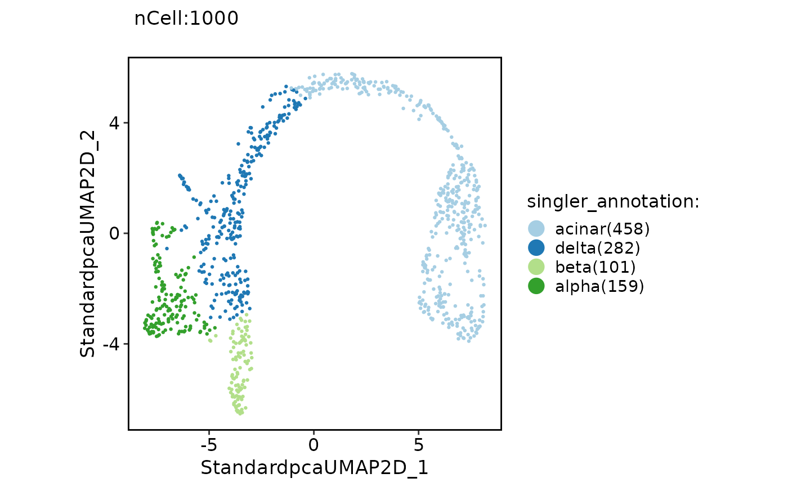

Annotate single cells using scmap.
Usage
RunSingleR(
srt_query,
srt_ref,
query_group = NULL,
ref_group = NULL,
genes = "de",
de.method = "wilcox",
sd.thresh = 1,
de.n = NULL,
aggr.ref = FALSE,
aggr.args = list(),
quantile = 0.8,
fine.tune = TRUE,
tune.thresh = 0.05,
prune = TRUE,
BPPARAM = BiocParallel::bpparam(),
query_assay = "RNA",
ref_assay = "RNA"
)Examples
data("panc8_sub")
# Simply convert genes from human to mouse and preprocess the data
genenames <- make.unique(capitalize(rownames(panc8_sub), force_tolower = TRUE))
panc8_sub <- RenameFeatures(panc8_sub, newnames = genenames)
#> Rename features for the assay: RNA
panc8_sub <- check_srtMerge(panc8_sub, batch = "tech")[["srtMerge"]]
#> [2023-02-08 08:32:09] Spliting srtMerge into srtList by column tech... ...
#> [2023-02-08 08:32:10] Checking srtList... ...
#> Data 1/5 of the srtList is raw_normalized_counts. Perform NormalizeData(LogNormalize) on the data ...
#> Perform FindVariableFeatures on the data 1/5 of the srtList...
#> Data 2/5 of the srtList is raw_normalized_counts. Perform NormalizeData(LogNormalize) on the data ...
#> Perform FindVariableFeatures on the data 2/5 of the srtList...
#> Data 3/5 of the srtList is raw_normalized_counts. Perform NormalizeData(LogNormalize) on the data ...
#> Perform FindVariableFeatures on the data 3/5 of the srtList...
#> Data 4/5 of the srtList is raw_counts. Perform NormalizeData(LogNormalize) on the data ...
#> Perform FindVariableFeatures on the data 4/5 of the srtList...
#> Data 5/5 of the srtList is raw_counts. Perform NormalizeData(LogNormalize) on the data ...
#> Perform FindVariableFeatures on the data 5/5 of the srtList...
#> Use the separate HVF from srtList...
#> Number of available HVF: 2000
#> [2023-02-08 08:32:14] Finished checking.
# Annotation
data("pancreas_sub")
pancreas_sub <- Standard_SCP(pancreas_sub)
#> [2023-02-08 08:32:17] Start Standard_SCP
#> [2023-02-08 08:32:17] Checking srtList... ...
#> Data 1/1 of the srtList is raw_counts. Perform NormalizeData(LogNormalize) on the data ...
#> Perform FindVariableFeatures on the data 1/1 of the srtList...
#> Use the separate HVF from srtList...
#> Number of available HVF: 2000
#> [2023-02-08 08:32:19] Finished checking.
#> [2023-02-08 08:32:19] Perform ScaleData on the data...
#> [2023-02-08 08:32:19] Perform linear dimension reduction (pca) on the data...
#> [2023-02-08 08:32:20] Perform FindClusters (louvain) on the data...
#> [2023-02-08 08:32:21] Reorder clusters...
#> [2023-02-08 08:32:21] Perform nonlinear dimension reduction (umap) on the data...
#> Non-linear dimensionality reduction(umap) using Reduction(Standardpca, dims_range:1-50) as input
#> Non-linear dimensionality reduction(umap) using Reduction(Standardpca, dims_range:1-50) as input
#> [2023-02-08 08:32:33] Standard_SCP done
#> Elapsed time: 15.57 secs
pancreas_sub <- RunSingleR(
srt_query = pancreas_sub, srt_ref = panc8_sub,
query_group = "Standardclusters", ref_group = "celltype",
)
#> Detected srt_query data type: log_normalized_counts
#> Detected srt_ref data type: log_normalized_counts
#> Perform SingleRCluster on the data...
#>
|
| | 0%
|
|==============================================================================================================| 100%
#>
#>
|
| | 0%
|
|==============================================================================================================| 100%
#>
ClassDimPlot(pancreas_sub, group.by = "singler_annotation")

pancreas_sub <- RunSingleR(
srt_query = pancreas_sub, srt_ref = panc8_sub,
query_group = NULL, ref_group = "celltype"
)
#> Detected srt_query data type: log_normalized_counts
#> Detected srt_ref data type: log_normalized_counts
#> Perform SingleRCell on the data...
#>
|
| | 0%
|
|==============================================================================================================| 100%
#>
ClassDimPlot(pancreas_sub, group.by = "singler_annotation")